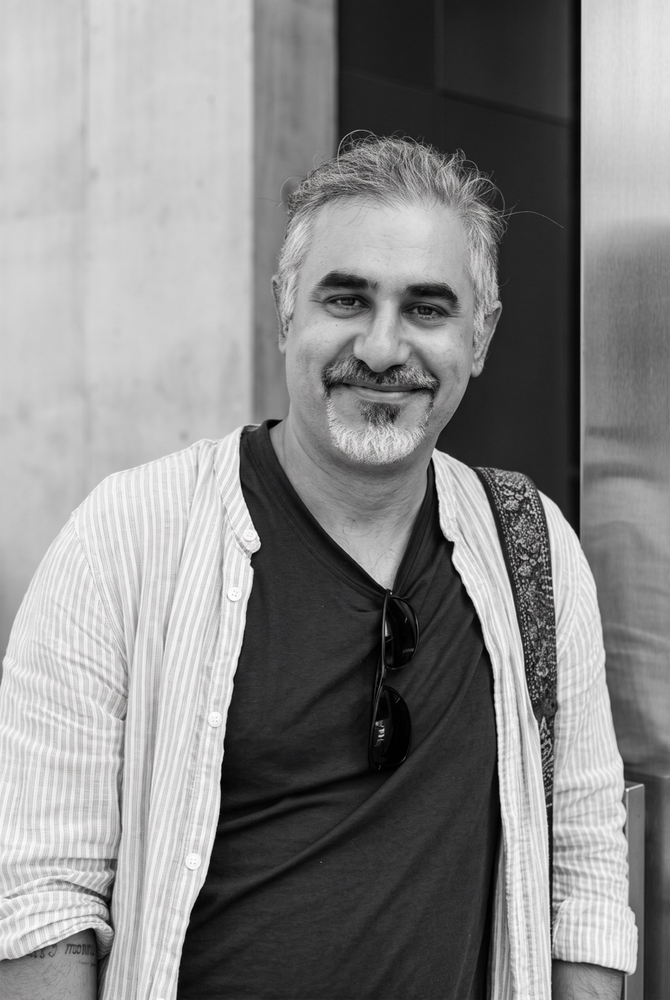

Arpit Gaind
Scholar-practitioner at the intersection of documentary film, digital humanities, and critical archival studies, centered on Indigenous media sovereignty.
Arpit Gaind is a scholar-practitioner with more than a decade of research, teaching, and filmmaking experience. A Ph.D. candidate in Culture and Performance in UCLA’s Department of World Arts and Cultures/Dance (School of Arts and Architecture), his research examines Indigenous media sovereignty, documentary history, and digital archives among Adivasi communities in Jharkhand, India. His documentary practice involves long-term collaboration with rural and Indigenous communities, centering on the political economy of the image. As an educator, Gaind serves as UCLA’s Teaching Assistant Consultant (2025–2026), mentoring graduate instructors in pedagogical design, and holds graduate certificates in Digital Humanities and Writing Pedagogy. His teaching spans media production, critical theory, and writing-based seminars. His institutional leadership includes chairing the ASUCLA Communications Board and guest-editing volume 57 of Comitatus. His work consistently bridges technical production and critical theoretical inquiry.
Work Themes
Documentary Film · Indigenous Media Sovereignty · Digital Archives · Teaching & Pedagogy
Contact
Affiliations
Association for Asian Studies · American Anthropological Association · Center for India and South Asia (CISA), UCLA · European Council for South Asian Studies · European Association of Social Anthropologists · Society for Cinema and Media Studies